Aprenda os 12 nervos cranianos através de mapas visuais estratégicos que organizam origem, trajeto, forames, funções, testes clínicos e lesões de forma simples, visual e rápida.
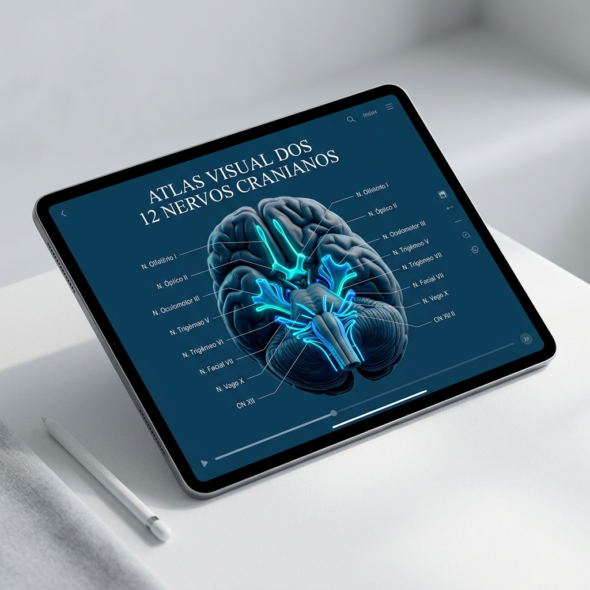
Download imediato • Garantia de 7 dias
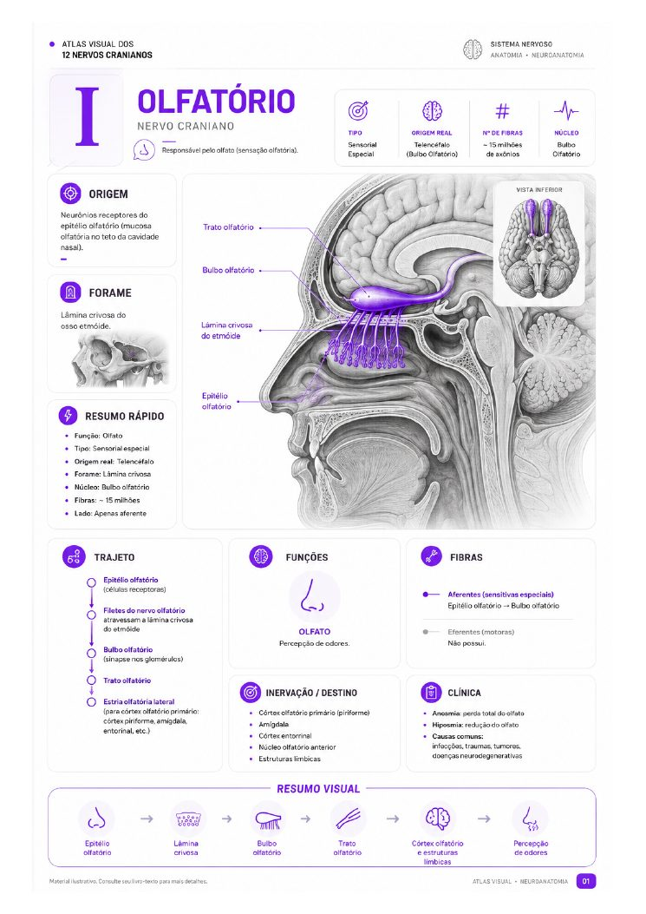
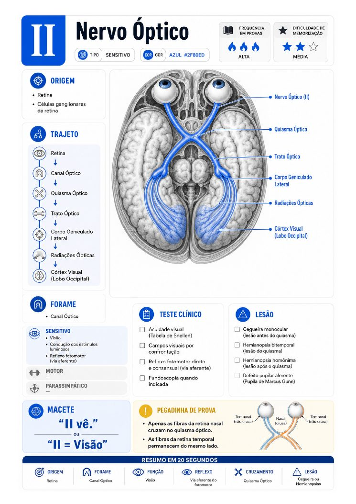
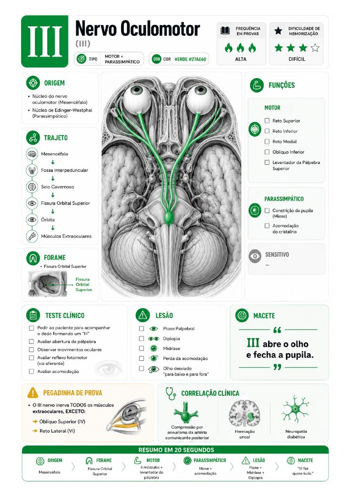
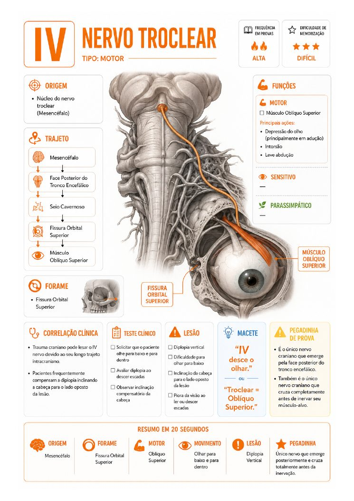
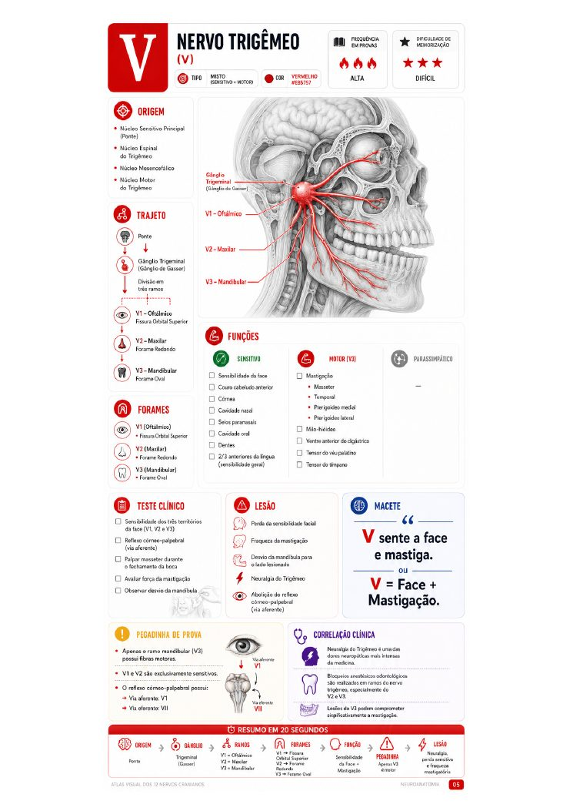
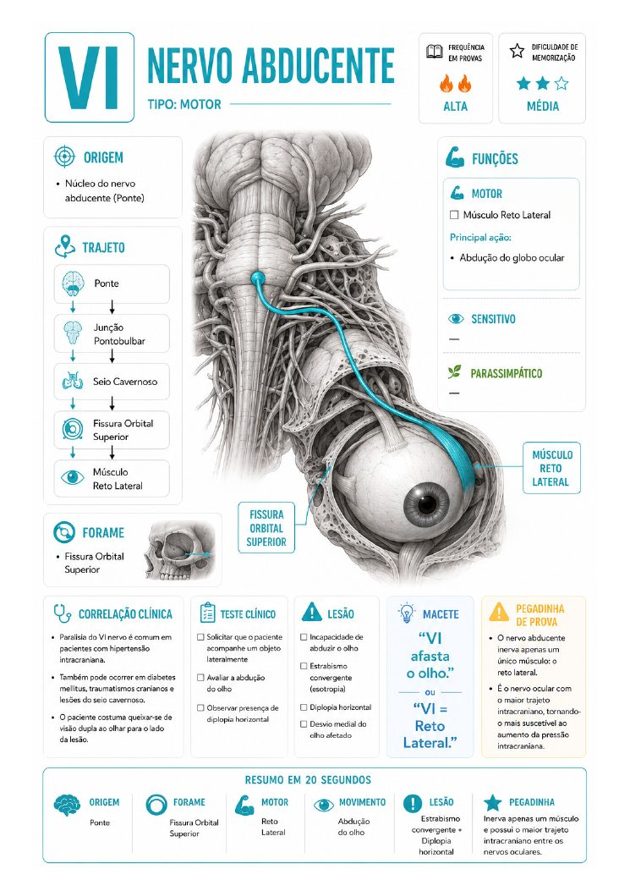
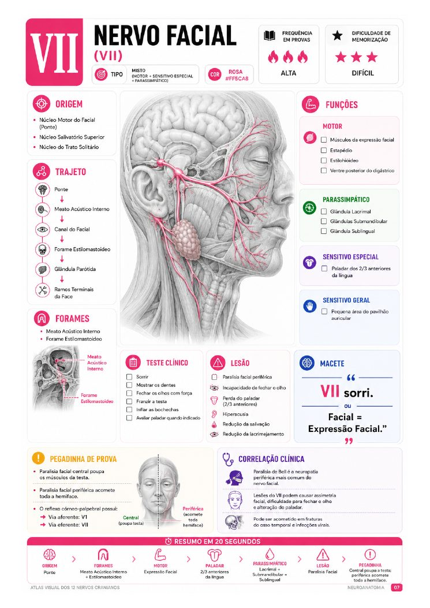
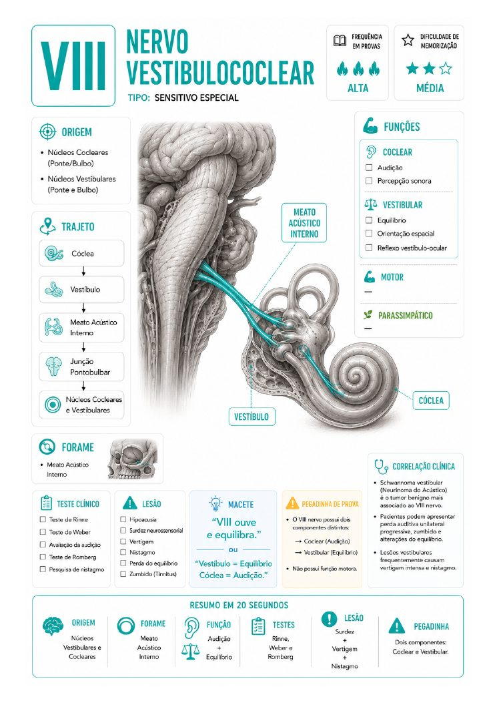
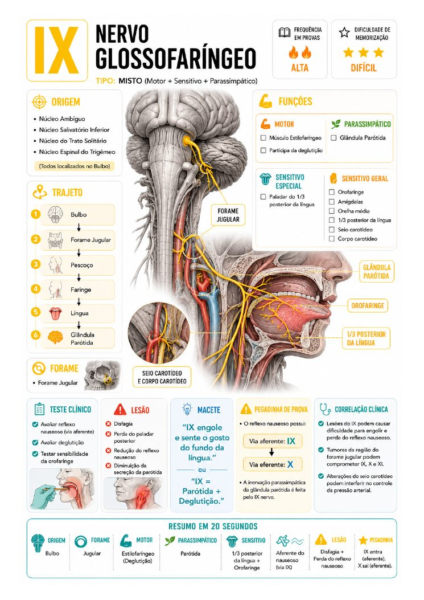
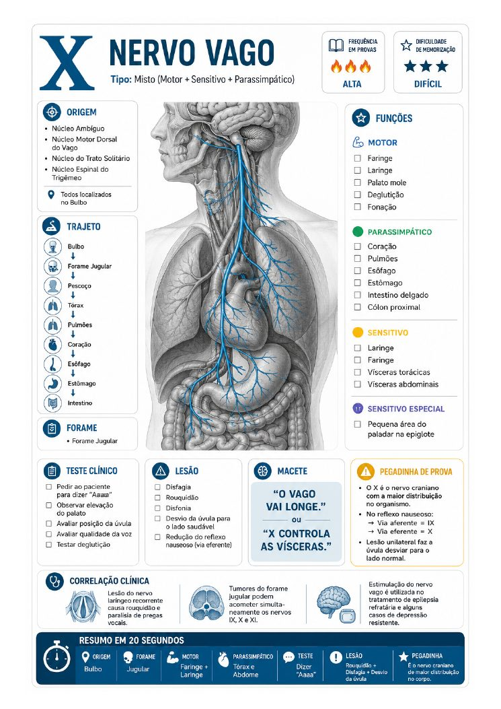
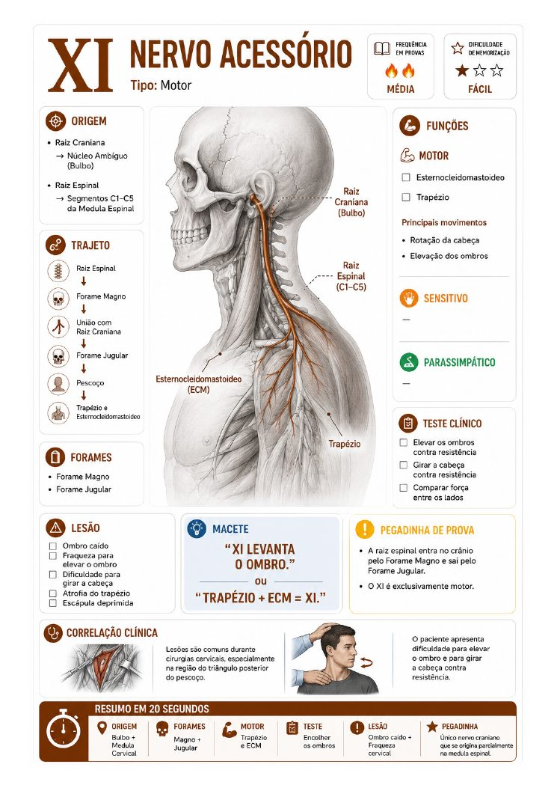
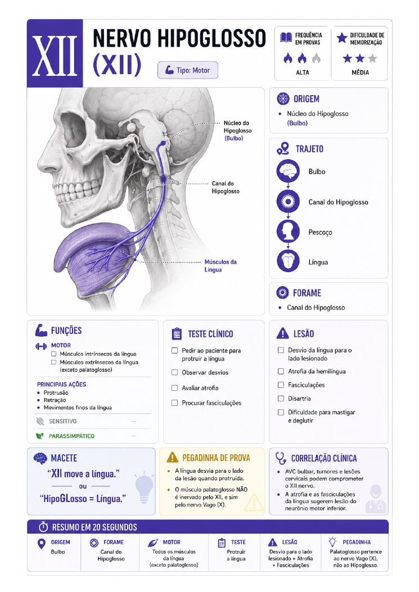
O Atlas Visual dos 12 Nervos Cranianos foi criado para ajudar estudantes de Medicina, Odontologia, Fisioterapia, Enfermagem e Fonoaudiologia a dominar Neuroanatomia sem depender de livros enormes ou centenas de páginas de anotações.
Cada nervo foi organizado em um dashboard visual contendo origem, trajeto, forames, funções, testes clínicos, lesões, macetes e correlações clínicas. Tudo pensado para revisão rápida e memorização.
Pare de quebrar a cabeça com textos longos. Estude de forma inteligente.
Pare de decorar informações desconexas e sem sentido prático. Entenda a lógica funcional de cada trajeto.
Memorize origem, trajeto, forames e funções rapidamente associando imagens médicas de alta qualidade.
Revise toda a matéria antes das provas teóricas ou práticas em poucos minutos, reavivando a memória.
Aprenda através de mapas visuais de fluxo projetados por especialistas em design instrucional e neurocirurgiões.
Economize dezenas de horas que seriam gastas lendo calhamaços de neuroanatomia de forma passiva e ineficiente.
Entre na sala de exames sabendo exatamente as pegadinhas recorrentes e os macetes mais fáceis de memorização.
Cada um dos 12 nervos detalhado de forma cirúrgica e premium.
"Cada resumo foi desenvolvido para transformar conteúdos complexos de Neuroanatomia em conhecimento organizado, rápido e fácil de revisar antes de avaliações práticas."
Estudo dos 12 nervos cranianos de forma simples, visual e eficiente. Clique nas abas ou utilize as setas para explorar cada nervo exatamente como ele aparece no atlas.
Perfeito para colocar em cima da bancada do laboratório ou abrir no tablet durante as sessões com peças anatômicas reais.
Este material é indispensável para:
O feedback de quem já conquistou notas melhores com nosso Atlas
“Para nós da Odonto, dominar o nervo Trigêmeo (V) e o Facial (VII) é obrigação. A riqueza de detalhes visuais sobre cada um dos ramos (oftálmico, maxilar e mandibular) com seus respectivos forames é surreal. Vale muito mais do que R$ 19!”
Ao garantir o Kit Completo você recebe estes bônus exclusivos, sem custo adicional.
Um mapa mental completo conectando todos os 12 nervos em uma única visão panorâmica.
Flashcards prontos para memorização espaçada, cobrindo funções, forames e trajetos.
Checklist estratégico para revisar tudo o que cai em prova nos minutos finais.
Guia visual com todos os forames, suas localizações e nervos que passam por eles.
Terra Fértil da Neuroanatomia
Atlas Visual dos 12 Nervos Cranianos
Você tem 7 dias para acessar o Atlas Visual dos 12 Nervos Cranianos e todos os bônus. Se por qualquer motivo o material não atender suas expectativas, basta enviar um e-mail e nós devolvemos 100% do seu investimento — sem burocracia, sem perguntas.